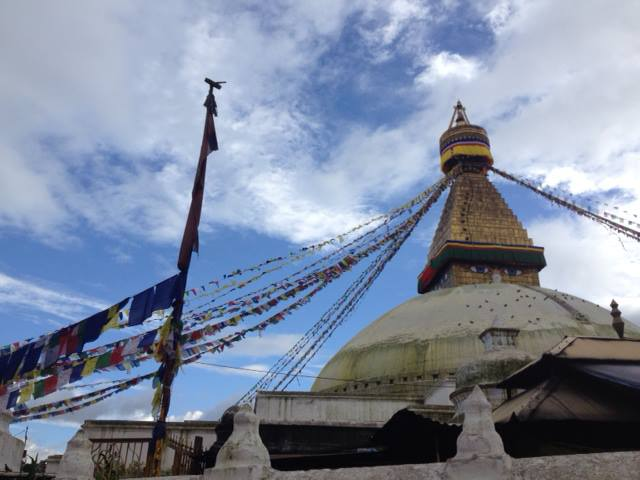

9/9 - Chinese Base Camp
I just spent 2 days in Chinese Basecamp at 4900 m.
We used this time for acclimatization and small camp tasks . Over all acclimatization is going well for me . . . with slight hiccup 2 nights ago when after dinner I had to throw up.
I do feel much better now. Only slight headache here and there. And I was able to control Z-wave devices of course!
9/11 - Intermediate Camp to Advance Base Camp
After 3:30 hrs I arrived in Intermittent Base camp at 5200 meters.We will stay here one night before we move to the ABC.
So far I feel much better, looks like acclimatization is workingHere is couple pictures from camp:

9/14 - Puja Ceremony
On Saturday we had a Puja, We drank some beer and whiskey. A Puja is a ceremony of gratitude or a religious ritual performed as an offering to various deities. It is done on a variety of occasions and settings, from daily puja done in the home, to temple ceremonies and large festivals, or to begin a new venture.
The puja is done by a lot of expeditions as a way of asking the gods for permission to enter the higher reaches of a mountain.
9/16 - Back at Advance Base Camp (ABC)
In about 12 hours I will be leaving to do second carry and sleep at Camp I on Monday. If the weather is good, I will go to Camp II to setup tent and then back to ABC.
Here is couple pics from ABC
9/23 - Waiting for weather
Looks like weather is moving in on 24, 25, and 26th some amounts snow.
That means it looks like summit day will be after 27th. We will see, the weather on Cho Oyu can be hard to predict.
At least this give me a couple rest days.

9/15 - Camp 1 Carry
Greetings from ABC! On Friday I did first carry to Camp 1.
4 hours up (normally 6-7) so I think I am in decent shape , and 3 hrs down so it was long day. I have pretty camp site!
9/20 - Camp 2 Last step in climatization process
I just got back from Night at Camp 2 at 7200m . My highest so far both in therms of altitude and sleep....
To make things harder I skipped camp 1 and went directly from ABC at 5700 to C2 at 7200 ... Long day but I felt great. This concludes acclimatization process.
So now it is time to wait for summit weather window. And couple rest days.
Arrived in Kathmandu ...
Arrived in Kathmandu, after 24hrs of flying and airports.
And guess what ? Z-wave works from here too:) I was able to control my Z-wave devices from Delhi airport , as well as from streets of Kathmandu
Visa problems ...
It would not be an adventure without some problems.... We learned today that our travel permit into Tibet will not be ready till Monday, so we have 2 more days in Kathmandu.
Travel permit, along with climbing permit, and Chinese visa is required for Cho Oyu expedition, we have other two but without Tibet travel permit we will not be allowed to enter Tibet.
So two more days of eating and growing anxious about mountains.Cheers!
Visa update ...
Hello there, So finally we have all permits and will be driving to Tibet early in the morning. Hurray , waiting was driving me crazy.
While waiting I did some cool mountain biking today , about 30 miles or so in Kathmandu valley... Good preparation for what is to come.
Eating last dinner before departure and this nice band is playing local music.
Next dispatch will be from Tibet,
Peace,MARIUSZ
Finally on the bus to Tibet ...
Hello there,
Finally on the bus to Tibet,
Stay tuned for more

Peace,MARIUSZ
Next stop Tibet ...
The border towns of Kodari (Nepal) and Zhangmu (Tibet).
In ancient times, Kodari was the starting point of a trans-Himalayan caravan route. Newar traders headed north from Kodari and after crossing Kuti pass turned east to continue their journey across the Tibetan Plateau to Lhasa.
China built the 115 kilometres (71 mi) Kathmandu-Kodari Road, since named Araniko Highway, during the 1963-67 period. As of 2011, Nepal is planning to convert the two lane highway to a six lane metalled highway.[1]It connects across the Sino-Nepal Friendship Bridge at the border to Friendshp Highway in the Tibet Autonomous Region of China.
Finally in the Himalayas ...
We arrived in Tingri, we will spend two days here for acclimatization before we move to Chinese basecamp.
Views from the Entrance to Mount Everest National Park ( Chomolungma or Qomolagnma) is the regional name for Mount Everest


Cho Oyu the Turquoise Goddess
Cho Oyu is the sixth highest mountain in the world at 8,201 metres (26,906 ft) above sea level. Cho Oyu means "Turquoise Goddess" in Tibetan. The mountain is the westernmost major peak of the Khumbu sub-section of the Mahalangur Himalaya 20 km west of Mount Everest. The mountain stands on the Tibet-Nepal border.

Just a few kilometres west of Cho Oyu is Nangpa La (5,716m/18,753 ft), a glaciated pass that serves as the main trading route between the Tibetans and the Khumbu's Sherpas. This pass separates the Khumbu and Rolwaling Himalayas. Due to its proximity to this pass and the generally moderate slopes of the standard northwest ridge route, Cho Oyu is considered the easiest 8,000 metre peak to climb. It is a popular objective for professionally guided parties.
The mountain was first climbed on October 19, 1954, via the north-west ridge by Herbert Tichy, Joseph Jöchler and Sherpa Pasang Dawa Lama of an Austrian expedition. Cho Oyu was the fifth 8000 metre peak to be climbed, after Annapurna in June 1950, Mount Everest in May 1953, Nanga Parbat in July 1953 and K2 in July 1954.
Source: Wikipedia
Z-Wave Himalayan Expedition
by Kwikset
In September of 2013, the Z-Wave Himalayan Expedition by Kwikset will climb this 8201-meter peak, located in Tibet.
Press the pins to read blog-posts and watch videos from the expedition.